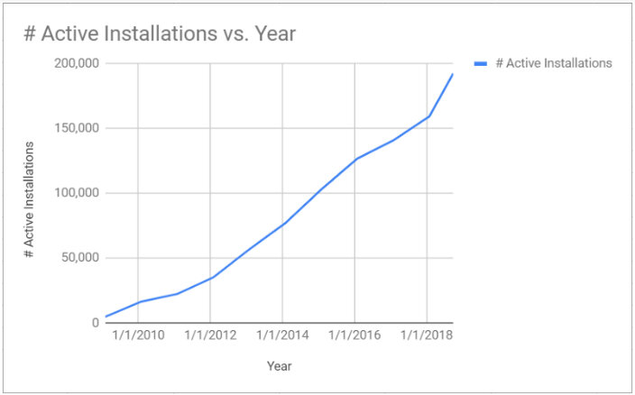
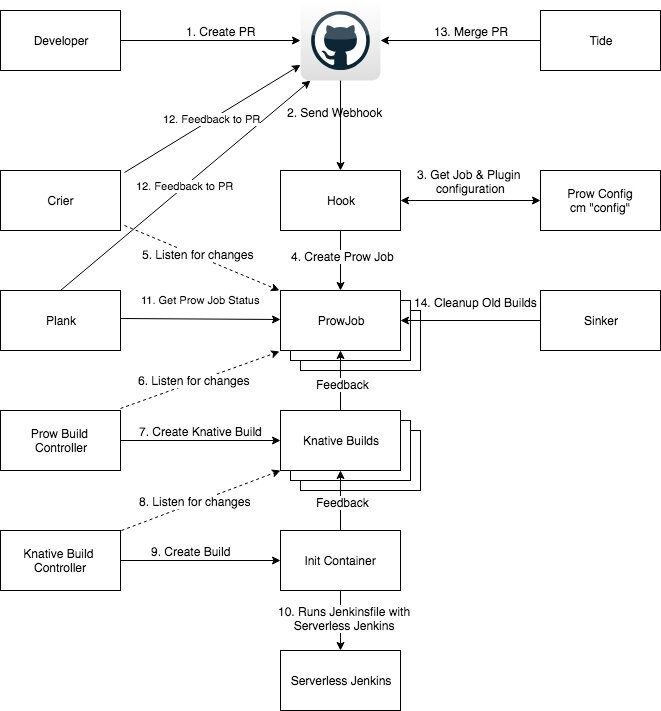

本文为翻译文章，点击查看原文。
Jenkins服务来源于创建自2004年的Hudson。在软件行业中，Jenkins已经是家喻户晓的明星产品，并且已经是CI和CD的领头羊。到目前为止有超过2050万的Jenkins任务，以及将近20万的Jenkins服务在运行中。这真的是非常惊人的增长速度。

上面的增长图说明在技术领域已经有很大的进步，列如云计算和容器，这些变化说明Jenkins在很多方面已经起到了很好的作用，我们应该很好的利用这些影响力。如今，很多公司都开始进行容器化改造，我们希望jenkins能跟上时代的步伐，开始自己的云原生之路。Jenkins应当继续成长，提供更多大家需要的自动化，可靠性，以及更好的开发体验。
Jenkins在取得巨大成功的同时，也产生了一些问题。
下面让我们来简要描述一些我们了解到的比较重要的问题。
- Jenkins服务的单点问题。特别是在服务维护期间，git webhook的操作都会被丢失.
- Jenkins服务经常将磁盘跑满，需要脚本或者人工清理之后，才能继续运行.
- 在服务升级之后，plugin的版本会匹配不上.
- 多分支扫描，经常导致GitHub的速率被限制.
- 在没有任何任务执行时，也需要占用巨大的内存，从基于使用情况来看，这是一种巨大的浪费.
未来的改进：
- 降低云计算开销，只在有任务需要被构建时才执行jenkins服务.
- 尽量使用上一次的临时构建通道，避免磁盘被耗尽.
- 通过持续集成进行插件的安装和插件的升级更新.
- 提供高可用性和可伸缩性的webhook操作，来解决spof问题.
- 避免由于GitHub的API扫描导致的速度风险.
- 提供灾难恢复策略，用来恢复存储在git上的所有配置信息.
Jenkins x项目在今年早些时候对外宣布为基于kubernetes的pull请求和gitops自动升级提供了CI和CD（Testing–>Staging–>Production）。Jenkins X同样继承了kubernetes的CRD特性(custom resource definitions)，并为你的Jenkins服务和作业提供了编排功能。
Jenkins x和Jenkins激动的宣布无服务的Jenkins。Jenkins x既能编排无服务的jenkins，一个静态的jenkins master，也能为每一个team提供Knative构建；因此现在开源的Jenkins云拥有完整的Knative构建支持。
无服务Jenkins使用成功的并且创新开源项目来解决和上述静态Jenkins master的问题。Kubernetes现在是事实的云实现，因此现在让我们专注在那些不太有名的，却能使得无服务的Jenkins成为可能的项目：Prow and Knative build。
在这篇博客的底部，有一个链接到未经编辑的Youtube，它演示了这系列的操作。
Prow是什么？
Prow来源于google的电子商务系统。被一帮纠结于是否需要使用Jenkins来构建那些基于kubernetes的GitHub repos的优秀群体所创建。Kubernetes是GitHub上最成功的项目之一。Prow被用于Istio和Jetstack的同时，还被140个项目使用。有许多不同的职责的微服务组成的基于事件的解决方案——为云原生提供了理想的松散耦合架构。对于merge到master上请求，有了更加有力的方式（不管是在构建请求之前，还是之后），可以使用ChatOps和构建系统进行交互。
Prow提供了可伸缩的，高可用的webhook事件处理器，可以将ProwJobs的CRDs请求写入到kubernetes,以至于像正在运行中的持续集成或者发布服务等其它微服务收到响应，并执行操作（kubernetes controller对于ProwJob 事件进行了监听）。Git 事件可以是新的 PR、issue、评论、merge、push等操作都会触发git event，因此我们能对更多的事件请求响应。
对于一些已经提供了一组配置规则的目录，我们提供了自动merge pull request功能。对于Prow组件和描述参考如下链接https://github.com/kubernetes/test-infra/tree/master/prow。
Prow同样也将它的配置信息存储在git上，这样在出现问题时可以进行恢复。Jenkins X项目在向用户发布前已经进行了广泛的测试和验证。你能在如下地址上看到Jenkins X项目对于CI/CD提供了很多基于yaml的Prow配置https://github.com/jenkins-x/prow-config。
Knative Build
Knative Build是一个继承自Kubernetes项目的云原生解决方案。让用户可以直接从源码进行构建。Knative Build最大的特色就是可以将一些简单的操作在同一个pod中的串联起来的执行，还可以在容器间进行状态的共享。这个特性通过Kubernetes init containers进行初始化。
Build Templates是可以通过Kubernetes pod来直接运行你构建的项目。这个允许你在构建项目时，事先指定要需要运行的docker image，构建时需要用到的环境变量、service accounts、secret以及需要mount的存储卷。build template是kubernetes CRD的集合。可以使用Jenkins x进行自动升级。通过build template创建或者引入一个应用时，可以使用jenkins x产生Prow配置。在Jenkins x项目中有一个列子是在BuildTemplate中配置prow config pointing。
什么是无服务Jenkins
现在您已经了解了我们正在做的事情的背景，我们可以看看无服务Jenkins。云原生Jenkins正在努力帮助开发人员、团队和组织迁移到云，并确保Jenkins不仅与云相关，还允许我们利用云和Jenkins最擅长的东西。
详情：

使用基于Kubernetes的Jenkins X将会帮你自动安装和配置Prow和Knative，下面我们开始准备进行安装。当创建项目或者引入项目时，jx cli生成了所有需要的配置，并且更新git repo webhook endpoint。
现在，每个pull请求或合并到master的请求都会触发使用Knative在Kubernetes中产生一个临时的Jenkins操作，checkout git revision，配置所需的凭证，并使用Jenkinsfile运行应用程序构建管道。一旦构建完成，它将丢弃Jenkinsfile运行程序pod。
多亏了War Packager（CWP）， Jenkins X发布过程构建了不同风格的Jenkins服务器，其中包含必要的构建工具。语言检测确保使用正确的风格。我们还使用Configuration as Code plugin（CasC）在构建时添加必要的Jenkins配置。CWP很棒的特性之一是它提取Jenkins插件再构建serverless Jenkins（而不是当serverless Jenkins），所以在基于Jenkins image的容器和JVM中启动Jenkins X耗时5秒——相比之下，要花几分钟启动基于Kubernetes的Jenkins server。
每当我们发布Jenkins X时，我们有一个monorepo，它用于自动构建和发布这些程序指定的Jenkins image。
这也意味着，因为插件是在yaml中定义的，并存储在git中，所以我们可以为CI和CD工具提供CI和CD。当我们想要升级一个插件时，我们发出一个pull请求，它会触发CI并构建一个预览Jenkins image，确保没有插件冲突，我们甚至可以运行模拟作业作为自动化测试（尽管我们还没有完成这一部分）。每个人都可以采用完全相同的方法，构建定制的Serverless Jenkins images，以相同的方式在管道中使用。
突出的一件事是,当你切换到Serverless Jenkins，进行构建是没有状态存储（这意味着为每个Job构建的编号总是1）。在Jenkins X中，我们为了PipelineActivity创建的CRD，所以这就允许我们在单个Jenkins构建完成之后想象先前的构建管道可以生成下一个构建编号和存储信息。
当Prow收到webhook事件时，它将在Kubernetes中创建一个Knative构建资源。接下来，监视构建的Knative构建控制器将创建一个Kubernetes pod，并自动添加一个克隆PR或发布分支源代码的init容器。接下来，利用Jenkinsfile runner，在一个单独的步骤中启动Jenkins可以访问Knative克隆的源代码并处理应用程序Jenkinsfile。
如何开始尝试？
今天，含有Prow的Jenkins X在使用terraform via在GKE上创建集群时开箱即用
jx create terraform
或者在其他创建集群或安装命令上使用功能标志时，即：
jx create cluster gke --prow
jx install — prow
FAQ
如果没有运行中的Jenkins服务，如何访问UI？
有一个非常重要的问题是Serveless Jenkins没有开源的Jenkins UI。下面我们来解释一下，Jenkins X具有可以使Jenkins X开发人员感到友好的IDE和CLI工具，但UI已经消失了。Prow有一个名为Deck的开源UI，Jenkins X安装了OOTB。CloudBees可能很快也将提供免费增值UI，但有关详细信息，请自行查找。
从哪里可以看到构建的日志
目前Jenkinsfile runner将构建日志发送到标准输出，但是一个允许我们利用Kubernetes集群集中日志记录的更好的解决方案将被开发，如Stackdriver，CloudWatch。 我们还提供jx logs -k（在构建运行时可用）和jx get build log（可用几个小时）
我是否需要更改依赖于特定Jenkins multibranch插件环境变量（如$ JOB_NAME）的Jenkinsfile？
不，我们已经尝试确保所有与MBP相关的环境变量仍然以相同的格式添加。 如果还有什么没有被添加的。请让我们知道。
如何将Jenkinsfiles迁移到Serveless Jenkins？
Jenkins X项目本身已经从使用静态（永远在线）Jenkins服务器迁移到Serveless Jenkins。是的，我们将Jenkins服务器缩小到0并将我们所有的Git存储转移到Prow和Serverless Jenkins。您可以在https://github.com/jenkins-x/组织上查看任何拉取请求，以查看它的实际运行情况。 我们使用的是declarative style Jenkinsfile（这是我们在将新项目导入Jenkins X时添加的），这意味着迁移到Serverless Jenkins只需要对Jenkins文件进行一些调整：
- 将代理类型更改为“any”，以便在一个临时的单独的Jenkins上执行管道
- 现在删除所有Jenkinsfile容器块，假设所有步骤都在一个单独的Jenkins管道引擎中执行。
- 对于任何发布分支管道都应该有一个标记（它们都应该创建一个git标签！），然后我们必须进行从checkout scm 到 git’github / foo.git'的切换，因为重新使用来自Knative和Jenkinsfile runner的克隆repo有问题，好像是因为将repo添加到Jenkins工作区时使用的是符号链接。 我们希望解决这个问题。
这里可以看到上述变化的一个例子。要启用prow的ChatOps /approve注释，您还需要一个类似的OWNERS文件到该链接，该文件使用批准者GitHub ID。
当前的限制
- 目前只有GitHub，我们将为多个git提供者提供支持
- Jenkins X使用了另一个分支，但是在接下来的几周内它将被切换回使用上游的prow repo
- 默认情况下，Jenkins X会创建一个声明性管道Jenkinsfiles，这尚未在脚本和共享库Jenkinsfile管道上进行测试，但如果按预期工作，我们很想收到反馈。
- Kubernetes Plugin PodTemplates尚不支持。 我们不确定这是否是一个好主意。 这意味着如果要迁移具有多个不同容器{…}块的现有Jenkinsfiles，则需要将每个容器的构建工具添加到上面由CWP创建的单个一次性Jenkins中。
还有工作要做，所以如果你想参与其中，请在Jenkins X Kubernetes slack rooms打个招呼来帮助解决问题，或先试试，让我们知道你是怎么做到的。
现在和我们一起参加 Jenkins World Nice并不会太晚，我们将在现场演示中展示这个以及其他精彩的演讲！
总结
Jenkins X是可供团队使用的一站式服务，可用来进行Prow ChatOps编排静态、无服务器或Knative构建作业，其中包括用于Kubernetes工作负载的自动化CI/CD以及更多自动化。